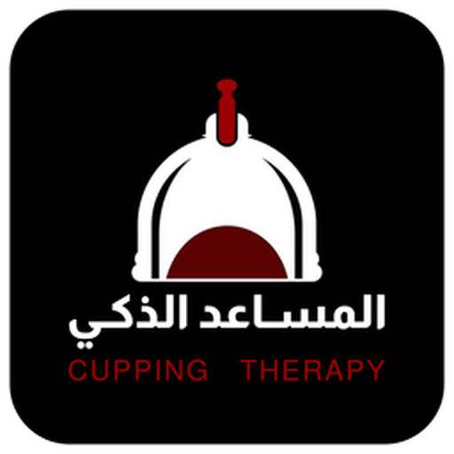
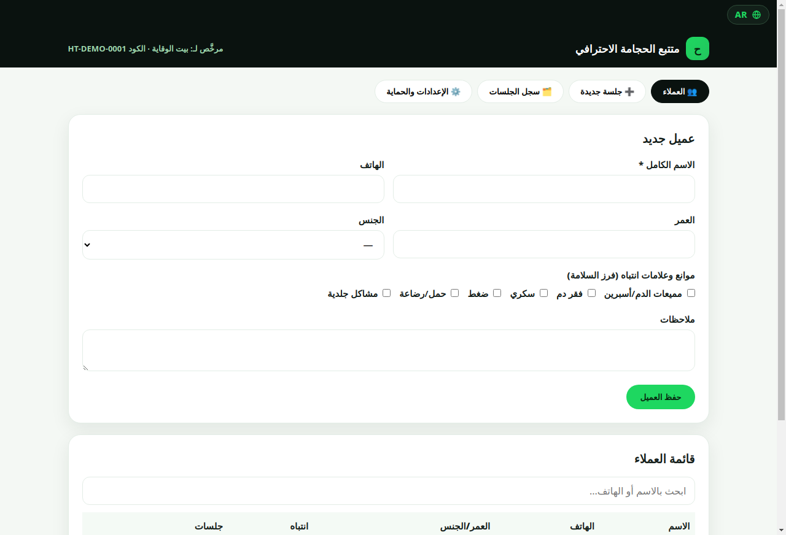
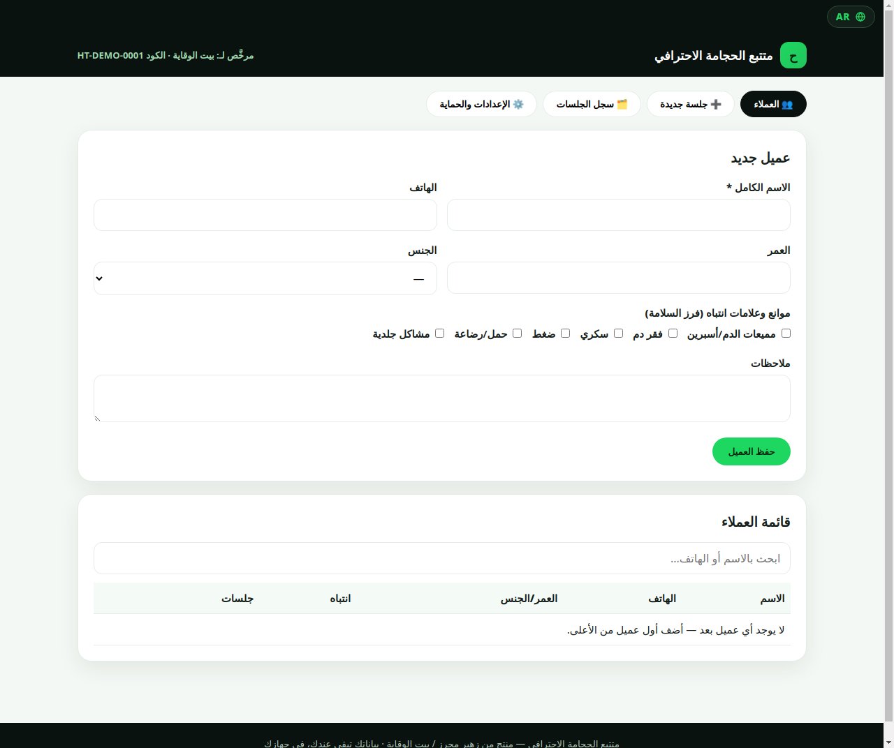
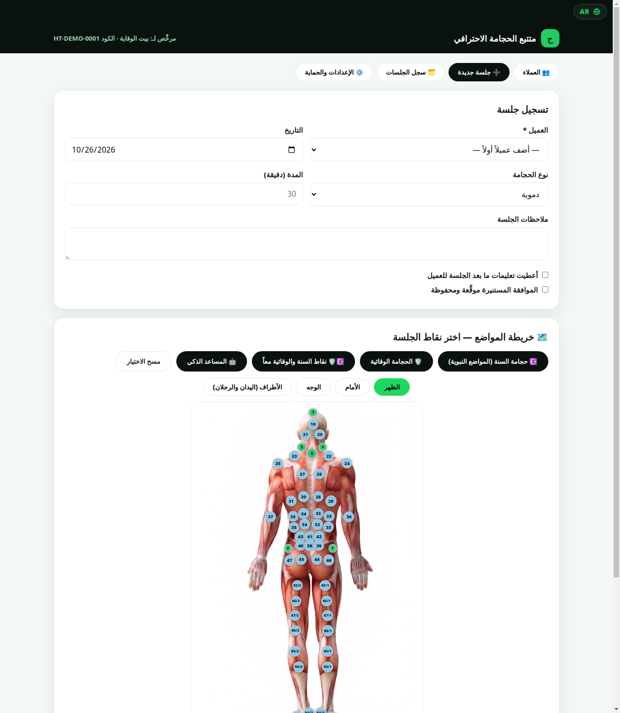
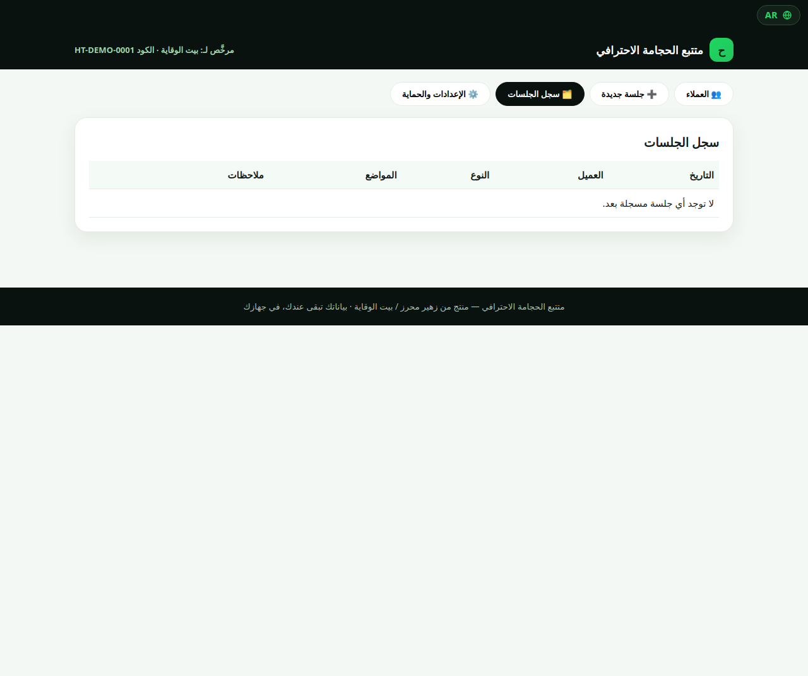
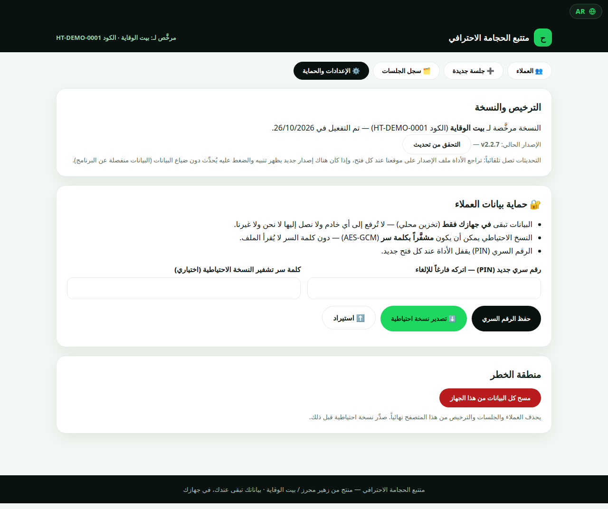
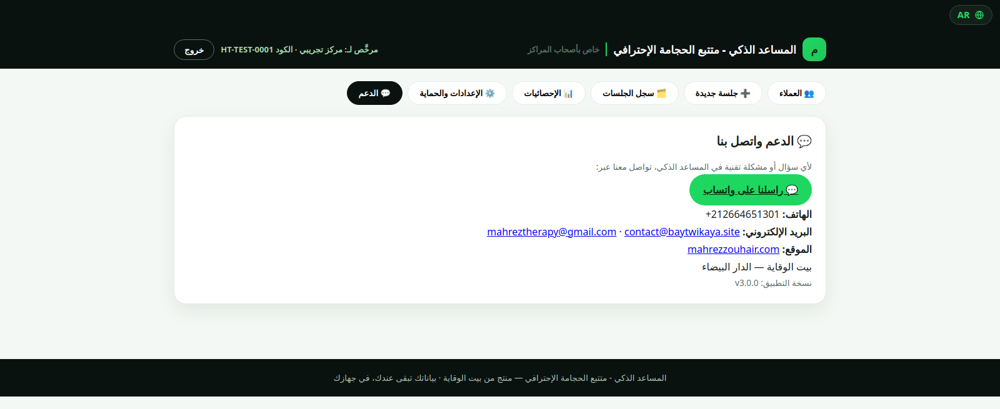

أداة احترافية لمراكز الحجامة: خرائط نقاط تفاعلية، مساعد ذكي يقترح النقاط حسب الحالة، وتوثيق كامل للجلسات — وكلشي محلي على جهازك، مع تحديثات تلقائية من داخل التطبيق.
نسخة Windows النهائية — مثبت حوالي 115MB: ثبّت التطبيق في حاسوبك (اختصار في سطح المكتب وقائمة ابدأ). الترخيص الرسمي بالاسم والكود بعد الطلب والأداء.
ستة مميزات عملية، مصاوبة من داخل مركز حقيقي.
154 نقطة على خرائط الظهر والأمام والوجه والأطراف — اختار باللمس مباشرة على الخريطة.
اختار حتى 3 حالات دقة وحدة، وهو يقترح النقاط المناسبة — 72 حالة جاهزة، وزيد أي موضع يدوياً برقمه.
مجموعات جاهزة بضغطة واحدة: نقاط السنة، الوقائية، أو معاً.
ملفات العملاء مع البحث السريع، سجل الجلسات، ورقة جلسة للطباعة، والموافقة المستنيرة قبل كل جلسة.
قفل PIN، نسخ احتياطية مشفّرة (AES-GCM)، وبيانات محلية 100%.
إلا طلعت نسخة جديدة، التطبيق كينبّهك وكيحدّث راسو بضغطة وحدة — والترخيص والبيانات كيتبعوك.
حمّل النسخة النهائية — من زر التحميل المباشر في هاد الصفحة (Windows، مثبت يتأنستلا في الحاسوب).
فعّل بالاسم والكود — اطلب الترخيص عبر واتساب، خلّص بتحويل بنكي، وتوصّل بالكود الخاص باسم مركزك.
سجّل العملاء والجلسات — من الخريطة التفاعلية، من نقاط السنة والوقائية، أو من المساعد الذكي.
وثّق وحدّث — كل جلسة محفوظة في السجل، والتحديثات كتوصلك داخل التطبيق بضغطة وحدة.
قبل ما تكون أداة، هي التزام مهني.
فرز الموانع والموافقة المستنيرة قبل كل جلسة، بمواءمة مع معايير WHO في السلامة والتعقيم.
بياناتك لا تغادر جهازك أبداً — تخزين محلي فقط، بلا خوادم ولا تتبع.
خرائط ونقاط مهنية، بعيد عن الخرافة والادعاءات غير المثبتة.
كل جلسة موثقة: العميل، النوع، النقاط، الملاحظات، والموافقة — مرجع مهني كامل.
صور حقيقية من داخل التطبيق، صفحة بصفحة.
أدخل اسم المركز أو الممارس وكود الترخيص. الترخيص مرتبط بالاسم، لجهاز واحد، والاسم يظهر أعلى نسختك.

أنشئ ملف كل عميل: الاسم الكامل، الهاتف، العمر، الجنس، موانع وكلمات انتباه (مميعات الدم، سكري، ضغط...)، وملاحظات — وابحث في القائمة بالاسم أو الهاتف، وعدّل أي ملف بضغطة.

سجّل الجلسة: العميل، التاريخ، نوع الحجامة، المدة، والملاحظات، مع الموافقة المستنيرة — ثم اختر النقاط من الخريطة التفاعلية، أو بضغطة واحدة من نقاط السنة، الوقائية، أو المساعد الذكي (حتى 3 حالات)، وزيد أي موضع يدوياً برقمه.

جدول كامل لكل الجلسات: التاريخ، العميل، النوع، المواضع، والملاحظات — مع ورقة جلسة للطباعة لكل جلسة، مرجعك لتاريخ المركز ومتابعة كل عميل.

الترخيص والإصدار مع التحقق من التحديثات، قفل PIN عند كل فتح، نسخ احتياطية مشفّرة (AES-GCM) مع تصدير واستيراد — وبياناتك تبقى محلية دائماً.

تواصل معنا مباشرة من داخل التطبيق: واتساب، هاتف، بريد إلكتروني، ونسخة التطبيق — باش الدعم يكون سريع ودقيق.

كنصاوبو أدوات جديدة لأصحاب المراكز، وغادي نعلنو عليها هنا منين توجد.
حمّل النسخة من هاد الصفحة، طلب الترخيص عبر واتساب، خلّص بتحويل بنكي، وتوصّل بالكود الخاص باسم مركزك — دخّلو في شاشة التفعيل.
نعم، الاستعمال اليومي كامل محلي على جهازك: العملاء، الجلسات، والنسخ الاحتياطية. الأنترنت كتحتاجو غير للتحميل الأول وللتحقق من التحديثات.
الترخيص الواحد لجهاز واحد بالاسم.
التطبيق كيتحقق بوحدو: إلا طلعت نسخة جديدة كيبان تنبيه، وضغطة وحدة كتحمّلها وتثبّتها — والترخيص والبيانات كيتبعوك تلقائياً.
بتحويل بنكي — شوف صفحة الدفع (من CIH التفعيل ف الحين، ومن بنك آخر حتى يوصل التحويل).
نسخة Windows (حاسوب). مثبّت رسمي: ثبّتو في حاسوبك، وغادي تلقى اختصار في سطح المكتب وقائمة ابدأ، وإلغاء التثبيت من لوحة التحكم.